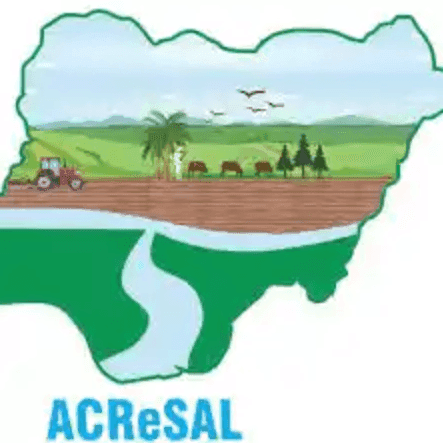

Haƴiyar Gaida na Hadaɗawa don Haɓaka Noma
Aikiken ACRES AL (Adamawa State Collaborative for Rural Economic Sustainability) shine aikin tare da mutane da yawa wanda ke niyya a canza kasua ta gari a Adamawa. Aikinin ya tasanta kan samar da jajirori masu lamba don mahimmantaccen makunai, samar da tsanantaccen hanyoyi na kasuwa ga manoma, da kuma hadawa da halin lafiyar jama'a na karuwa. Yake hadawa da kamalogin gwamnati, ƴan noma, da kamalogin kasua don aiwatar da kayan dambe don tunanin matsalalin gida a kasuan gida."